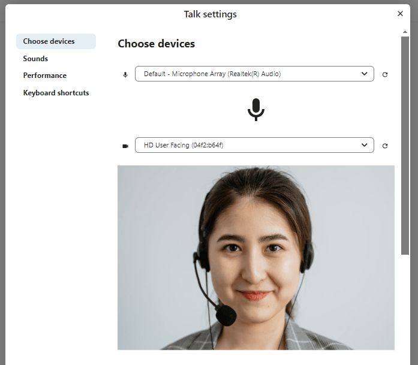
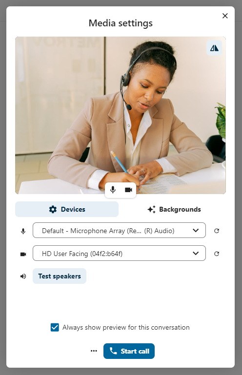

Bli med i en samtale eller chat som gjest
Nextcloud Talk tilbyr lyd/video og tekstchat integrert i Nextcloud. Den tilbyr et webgrensesnitt samt mobilapper.
Du kan finne ut mer om Nextcloud Talk ’på vår hjemmeside <https://nextcloud.com/talk/>’_.
Å bli med i en chat
If you received a link to a chat conversation, you can open it in your browser to join the chat. Here, you will be prompted to enter your name before joining.

You can also change your name later by clicking the Edit button, located top-right.

Kamera- og mikrofoninnstillingene dine finner du i menyen ’’Innstillinger’. Der kan du også finne en liste over snarveier du kan bruke.
{kind=link}
Å bli med i en samtale
Du kan starte en samtale når som helst med ’’Start samtale’’ -knappen. Andre deltakere vil bli varslet og kan bli med i samtalen. Hvis noen andre allerede har startet en samtale, endres knappen i en grønn ’’Bli med i samtale’’ knapp.

Før du faktisk blir med i samtalen, vil du se en enhetssjekk, der du kan velge riktig kamera og mikrofon, aktivere bakgrunnsuskarphet eller til og med bli med på hvilken som helst enhet.
{kind=link}
Under en samtale finner du kamera- og mikrofoninnstillingene i menyen ’’…’’ i topplinjen.

Under en samtale kan du dempe mikrofonen og deaktivere videoen din med knappene øverst til høyre, eller bruke snarveiene ’’M’’ for å dempe lyd og ’’V’’ for å deaktivere video. Du kan også bruke ’’mellomromstasten’’ for å veksle demp av og på. Når du er dempet, vil det å trykke på mellomrom oppheve dempingen av deg, slik at du kan snakke til du slipper mellomromstasten. Hvis du ikke slår på lyden, vil å trykke mellomrom dempe deg til du slipper.
Du kan skjule videoen din (nyttig under en skjermdeling) med den lille pilen rett over videostrømmen. Ta den tilbake med den lille pilen igjen.
Flere innstillinger
I samtalemenyen kan du velge å gå i fullskjerm. Du kan også gjøre dette ved å bruke ’’F’’ -tasten på tastaturet. I samtaleinnstillingene finner du varslingsalternativer og den fullstendige samtalebeskrivelsen.